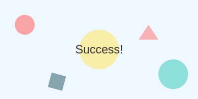

Thank You for Submitting!
We have received your sign-up information. A confirmation email has been sent to your inbox.
What happens next?
- Check your email for a verification link.
- Click the link to activate your account.
- Complete your profile preferences.
